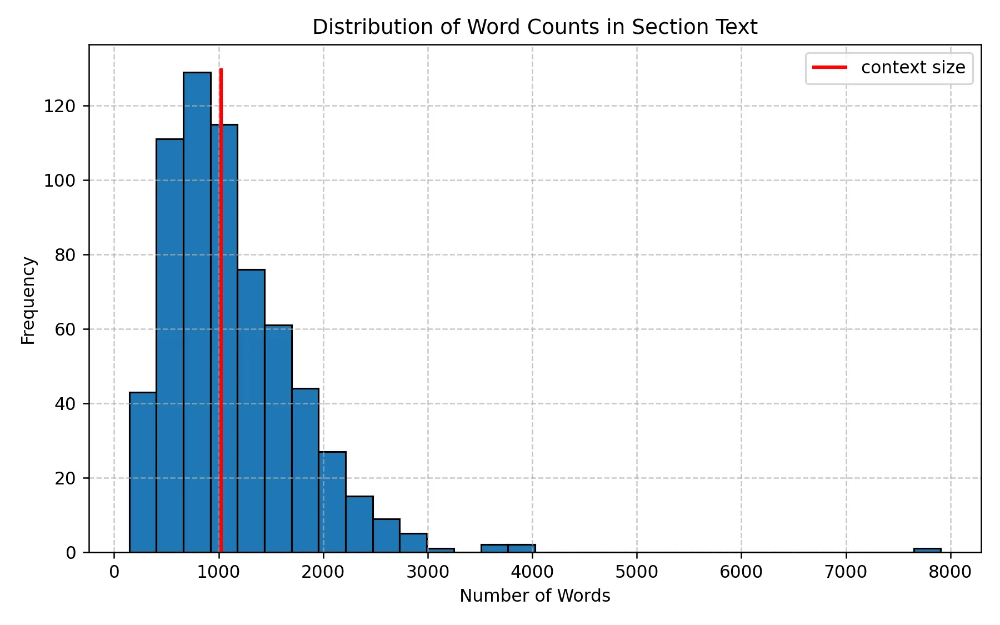

LLMs 101: Training an LLM from Scratch
Large Language Models (LLMs) are everywhere nowadays. They can perform a wide range of tasks, such as answering questions on various topics, summarizing long articles, and, more interestingly, reasoning and generating project ideas. In this article, I will guide you through training a simple LLM, specifically, the GPT-2 model.
Today, most LLMs on the market are based on the transformer architecture, first introduced in the seminal paper "Attention Is All You Need." Although I won't dive into the detailed workings of transformers, since there are many excellent tutorials covering the technical aspects, I will show you how to select a transformer-based model off the shelf and train it on your own dataset.
For this tutorial, I will use Hugging Face 🤗, a central hub for the machine learning and natural language processing (NLP) community. Hugging Face 🤗 provides essential tools, models, datasets, and libraries that simplify and accelerate the development of AI applications, particularly those involving transformers and LLMs.
The goal of this article is to keep things simple and concise. So, let's jump right in!
ğŸ› ï¸ Step 0: Installing the Required Packages
Before we dive into training our LLM, let's set up our environment by installing the necessary packages. You have a couple of options for installation, depending on your preferred workflow.
💡 Which Package Manager Should You Use?You can choose between two popular tools for managing your Python environment and packages:
- 🪶 micromamba: A lightweight, fast, and minimal package and environment manager for Python. It’s an excellent alternative to Conda and ideal for managing isolated environments.
- 🚀 pip: The official package manager for Python, suitable for quick installations and virtual environments.
We'll need the following libraries:
- ✅ NumPy — https://numpy.org/install/
- ✅ pandas — https://pandas.pydata.org/docs/getting_started/install.html
- ✅ matplotlib — https://matplotlib.org/stable/install/index.html
- ✅ 🤗 Transformers — https://huggingface.co/docs/transformers/en/installation
📊 Step 1: Obtaining the Dataset
The choice of the dataset is entirely up to you! With over 300,000 datasets available on 🤗 Datasets, you can find one that suits your interests and goals. Whether you're interested in literature, science, or social trends, 🤗 Datasets has you covered!
Since my background is in physics, I'll use a physics-related dataset available on 🤗 Datasets. Specifically, I've chosen:
📚 The Feynman Lectures on Physics by Enes Grahovac
This dataset contains excerpts from one of the most iconic physics textbook ever written. To get the dataset, go to the Feynman Lectures on Physics dataset page. On the dataset page, click the use this dataset button and choose the pandas option. Then copy the link and use pandas to load the dataset:
import pandas as pd
df = pd.read_parquet("hf://datasets/enesxgrahovac/the-feynman-lectures-on-physics/data/train-00000-of-00001-d61a336a5c880eb1.parquet")
The dataset contains 7 columns, capturing excerpts from the renowned physics textbook Feynman Lectures on Physics (though it doesn't include the entire book). Among these columns, the most valuable for our LLM training is:
section_text: This column contains segments of text from the lectures, which we will use as training data for our language model.
To count the total number of words in the section_text column, we can use the following code:
# Count total words in the 'section_text' column
total_words = df["section_text"].apply(lambda x: len(str(x).split())).sum()
# Print the result
print(f"Text size: {total_words} words")
📖 Step 2: Tokenization
This dataset contains more than 724,000 words, which is a good amount of text to train our little LLM! 🚀 Now, it's time for tokenization, a crucial step in transforming raw text into a format that the model can understand.
Tokenization is simply the process of converting text into numbers, breaking down sentences into smaller units (tokens) that the model can process.
🤖 Choosing the Right Tokenizer
Since we're using GPT-2, we'll use the GPT2Tokenizer from 🤗
transformers library.
🤗 transformers provides a convenient interface to load either:
- ✅ A pre-trained tokenizer — Already trained on massive datasets and optimized for GPT-2.
- ✅ An untrained tokenizer — Can be trained from scratch if you want a completely custom tokenization strategy.
For simplicity, we will start with the pre-trained tokenizer.
from transformers import GPT2Tokenizer
# Load the GPT-2 tokenizer
tokenizer = GPT2Tokenizer.from_pretrained("openai-community/gpt2")
# Print tokenizer details
print(tokenizer)
The tokenizer outputs key details about its configuration:
- 🧩 Vocabulary Size: 50,257 tokens (unique token IDs)
- 🧠Maximum Context Length: 1,024 tokens. This is the maximum input size for GPT-2.
- 🏷️ Special Tokens:
<|endoftext|>– Used as:bos_token(Beginning of Sequence)eos_token(End of Sequence)unk_token(Unknown Token)- 📌 All special tokens are set to the same identifier:
'<|endoftext|>'
Let's see how the tokenizer processes our dataset by tokenizing the first row of section_text:
# Tokenize the first section without truncation
tokenized_output = tokenizer(df["section_text"].iloc[0])
print(tokenized_output)
The tokenizer returns a dictionary containing:
- 📚
input_ids: A list of token IDs representing the text. - 💡
attention_mask: Can you guess what this is?
Did you notice something? 🫢
The text length exceeds the tokenizer’s context window of 1,024 tokens, which means the model cannot process the entire text at once. This could cause:
- ⌠Indexing errors (out-of-bounds errors): When the model tries to access tokens beyond the maximum input length.
To address this, we can instruct the tokenizer to automatically truncate any input that exceeds the context size using the truncation=True argument:
# Tokenize with truncation enabled
tokenized_truncated = tokenizer(df["section_text"].iloc[0], truncation=True)
# Print the truncated tokenized output
print(tokenized_truncated)
📚 The histogram below displays the distribution of section lengths based on word count, and the red 💅 vertical line marks the GPT-2 context limit (1,024 tokens). You’ll likely notice that a significant portion of the text exceeds the context window, meaning some sections are too long for the model to handle in a single pass.

Distribution of Word Counts in Section Text
Since many sections exceed the model’s input limit, we will split longer texts into smaller chunks before training.
For example, we can split the text by periods (".") or newline characters ("\n")
to create manageable chunks.
This is how it is done:
# Splitting the long section by sentences based on "."
df["section_text_split"] = df["section_text"].str.split(".")
df_exploded = df.explode("section_text_split")
🚀 Step 3: Initializing the GPT-2 Model for Training
We are now ready to train our LLM! 🉠As mentioned earlier, we will use the GPT-2 model, but I won't dive into the model's internals here, as there are many excellent resources that explain its architecture in detail. If you'd like to understand the theory and inner workings of GPT-2, I highly recommend this excellent tutorial:
👉 📖 From Theory to Code: Step-by-Step Implementation and Code Breakdown of GPT-2 model by Vipul Koti
🧠Want to Train a Different LLM?
🤗 offers a vast collection of LLM models. Feel free to explore and experiment! 🚀
👉 🔗 Browse available models: 🤗 Models
We will use the GPT2LMHeadModel, which is the
GPT-2 model with a language modeling head (LM head).
The LM head is a linear layer that outputs a tensor of the same shape as the tokenized input,
allowing the model to predict the next token in a sequence.
GPT-2 Model with the LM head. Credit: Vipul Koti.
Let's start by importing the necessary modules from 🤗 transformers:
# Importing Hugging Face Transformers modules
from transformers import GPT2Config, GPT2LMHeadModel, TrainingArguments, Trainer
Next, we will create a GPT2LMHeadModel from scratch using the GPT2Config class and move it to the GPU if available:
✅ Here, GPT2Config() Initializes the model with default GPT-2 configurations
- Layers: 12
- Hidden dimensions: 768
- Attention heads: 12
print(GPT2Config()) to investigate the contents.
âš ï¸ Note on Using a Pre-Trained Model:
If you want to fine-tune a pre-trained GPT-2 instead of training from scratch, simply use:
from transformers import GPT2LMHeadModel
# Load a pre-trained GPT-2 model from Hugging Face
model = GPT2LMHeadModel.from_pretrained("gpt2")
# Move model to GPU if available
model = model.to(device)
🚀 Step 4: Training Setup — Defining Arguments, Tokenizing the Dataset, and Preparing for Training
First, we define the hyperparameters for the training process using TrainingArguments 🤗 transformers.
from transformers import TrainingArguments
# Define training arguments
training_args = TrainingArguments(
output_dir="./gpt2_pretrained", # Directory to save model checkpoints
overwrite_output_dir=True, # Overwrite old checkpoints
per_device_train_batch_size=8, # Number of samples per batch per GPU
num_train_epochs=5, # Number of times the model will see the full dataset
logging_dir="./logs", # Directory for logs
save_strategy="epoch", # Save model after each epoch
report_to="none", # Disable logging to Weights & Biases
fp16=True, # Enable mixed-precision training (faster on modern GPUs)
)
Explanation of Training Arguments:
- 📂
output_dir="./gpt2_pretrained": The directory where trained model checkpoints will be saved. - 🧹
overwrite_output_dir=True: If enabled, overwrites previous checkpoints (useful for experiments). - 🚀
per_device_train_batch_size=8: Number of training samples processed per GPU. (Adjust based on your VRAM) - ğŸ”
num_train_epochs=5: Number of passes through the full dataset. - 📚
logging_dir="./logs": Saves logs for tracking training progress. - 💾
save_strategy="epoch": Saves model checkpoints at the end of every epoch. - 🧩
report_to="none": Prevents logging to third-party services like Weights & Biases. - ⚡
fp16=True: Enables mixed-precision training, which speeds up training and reduces memory usage on GPUs that support it (e.g., NVIDIA 4090).
Now, let's convert our DataFrame into a 🤗 Dataset, tokenize it, and prepare it for training.
from transformers import AutoTokenizer
from datasets import Dataset
# Convert DataFrame to Hugging Face Dataset. I use only 1000 rows for simplicity
dataset = Dataset.from_pandas(df_exploded[['section_text_split']].iloc[0:1000])
# Rename the column to 'text' to match model expectations
dataset = dataset.rename_column("section_text_split", "text")
By default, GPT-2 does not use a pad_token, as it was originally trained without one.
However, during training and batching, padding is essential to ensure that all input sequences are of the same length.
Without proper padding, we cannot efficiently stack multiple samples into a batch.
To resolve this, we assign a custom padding token. Since GPT-2 already uses "<|endoftext|>"
(eos_token) to mark the end of a sequence,
we can set it as the padding token to avoid expanding the model's vocabulary.
from transformers import GPT2Tokenizer
# Define the tokenizer
tokenizer = GPT2Tokenizer.from_pretrained("openai-community/gpt2")
# Set EOS token as PAD token to avoid vocabulary resizing
new_pad_token = "<|pad|>"
tokenizer.add_special_tokens({'pad_token': new_pad_token})
# Ensure the tokenizer uses EOS token as PAD token
tokenizer.pad_token = tokenizer.eos_token
# Tokenization function
def tokenize_function(examples):
return tokenizer(
examples["text"], # Tokenize the 'text' column
padding="max_length", # Pad all sequences to the same length
truncation=True, # Truncate texts longer than max length
max_length=1024, # Set maximum input length
return_tensors="pt" # Return PyTorch tensors
)
In causal language modeling (like GPT-2), input_ids are used as labels because
the model predicts the next token from previous tokens. So, we need to tokenize the dataset accordingly.
# Function to copy input IDs as labels (for causal language modeling)
def add_labels(example):
example["labels"] = example["input_ids"].copy() # Labels match input tokens
return example
Now, let's apply our functions to the dataset:
# Tokenize the dataset
tokenized_datasets = dataset.map(
tokenize_function,
batched=True, # Tokenizes multiple examples at once (faster)
remove_columns=["text"], # Removes original text column (not needed)
)
# Add labels to the tokenized dataset
tokenized_datasets = tokenized_datasets.map(
add_labels,
batched=True # Adds labels for multiple examples
)
🚀 Step 5: Training the GPT-2 Model with 🤗 Trainer
To train our GPT-2 model, we will use the Hugging Face Trainer API, which is:
- ✅ Simple and Convenient: Abstracts away boilerplate code.
- ⚙️ Optimized for Transformer Models: Built specifically for models like GPT-2.
- 🚀 Efficient: Supports distributed training, mixed-precision, and logging out-of-the-box.
However, you can always choose to train using plain PyTorch if you prefer full control over the training loop.
from transformers import Trainer
# Initialize the Trainer
trainer = Trainer(
model=model, # Our GPT-2 model
args=training_args, # Training arguments (defined previously)
train_dataset=tokenized_datasets, # Tokenized dataset for training
tokenizer=tokenizer # Tokenizer for data preprocessing
)
With everything set up, we can now start training the model 💪:
# Start the training process
trainer.train()
Once training is complete, let's save the trained model and tokenizer for future use:
# Save the trained model
trainer.save_model("./gpt2_pretrained")
# Save the tokenizer with its special tokens
tokenizer.save_pretrained("./gpt2_pretrained")
🚀 Step 6: Testing the Trained GPT-2 Model & Generating Text
Now that we've finished training the GPT-2 model, it's time to test it by generating text!
We will use 🤗 pipelineAPI, which provides an easy interface for model inference.
from transformers import pipeline
# Load fine-tuned model and tokenizer from saved directory
generator = pipeline(
"text-generation", # Task: Generate text
model="./gpt2_pretrained", # Path to fine-tuned model
tokenizer="./gpt2_pretrained" # Path to saved tokenizer
)
📦 Here, pipeline is a high-level API from Hugging Face that simplifies model inference.
Finally, generating some text:
# Generate text with the fine-tuned model
output = generator(
"The equations of motion are", # Prompt to start generating text
max_length=50, # Maximum length of the generated sequence
do_sample=True, # Enable sampling (introduces randomness)
temperature=1.0 # Sampling temperature (higher = more creative)
)
- 🖋️ Prompt:
"The equations of motion are"– The starting point (also known as a seed or prompt). - ğŸ“
max_length=50– Limits the output to 50 tokens (including the prompt). - ğŸ²
do_sample=True– Enables sampling, making the output less deterministic (adds randomness). - 🌡ï¸
temperature=1.0– Controls the randomness:
- Higher (>1) = More creative and diverse output.
- Lower (<1) = More focused and conservative output.
🉠Conclusion: Building and Testing a Custom GPT-2 Model
Congratulations on training your own GPT-2 model! You've come a long way — from preparing your dataset and fine-tuning your model to generating meaningful text. 💪📚